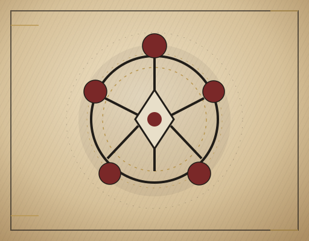
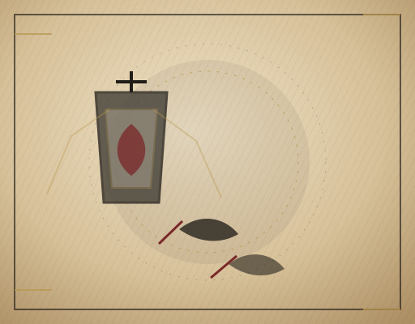
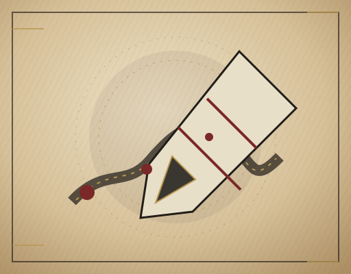
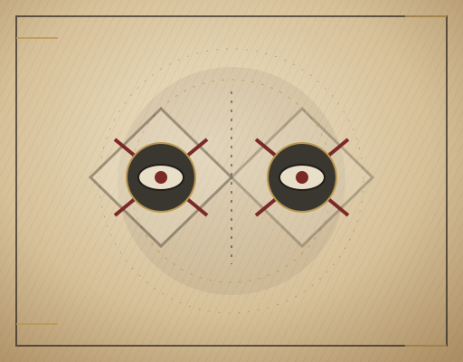
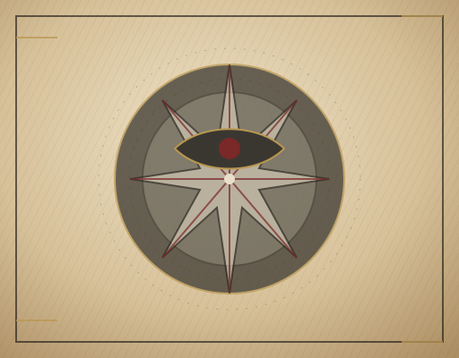
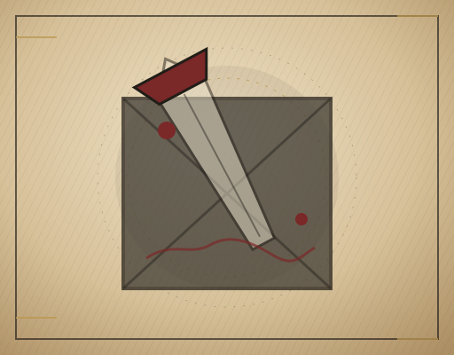
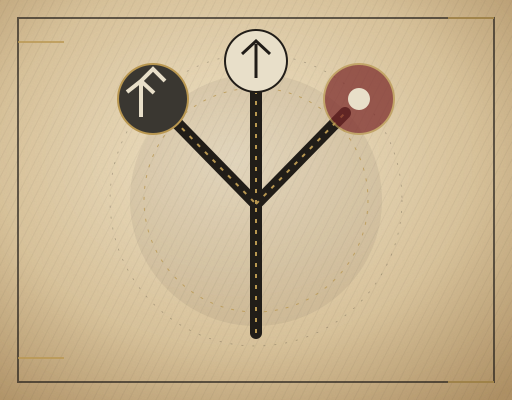
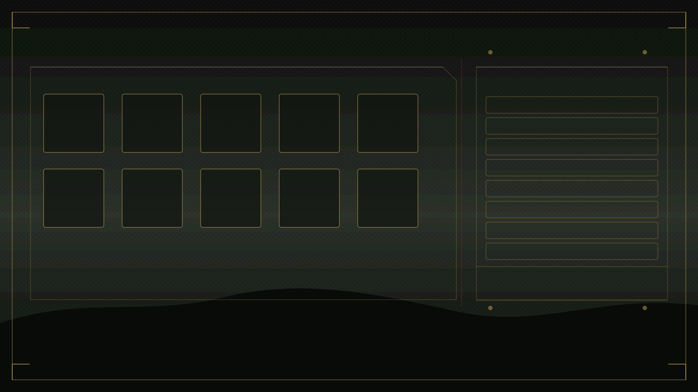
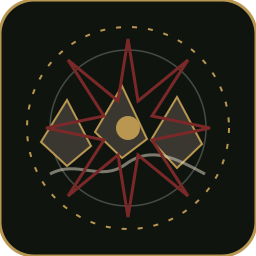

新增卡面候选

card.skill.warding_circle守夜圆环 · 防御

card.skill.lantern_step提灯步 · 防御/抽牌
card.skill.whispered_hunch灵性预感 · 抽牌

card.skill.mirrored_memory镜中记忆 · 灵性/抽牌

card.skill.fated_echo命运回声 · 标记

card.skill.piercing_omen穿刺凶兆 · 标记爆发

card.skill.coffin_nail棺钉 · 高风险爆发

card.skill.second_sight第二视觉 · 灵性/揭示
卡组、第二挑战与修饰

scene.deck.archive1600 × 900

challenge.mode.broken_procession256 × 256
challenge.modifier.obituary_echo128 × 128
challenge.modifier.twin_shadow128 × 128
challenge.modifier.ritual_vigil128 × 128
route.variant.overridden_node128 × 128